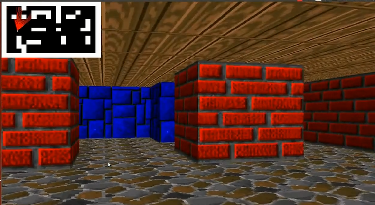
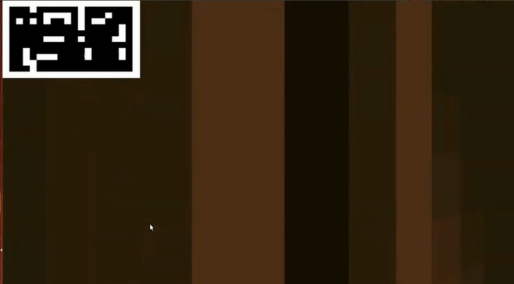

My Projects
Project 1
This project is a 3D maze game created using ray casting techniques.
Project 2
Description of project 2...
Blog Article: My Journey in Software Development
Finding My Passion
As a software engineering student, my journey into the tech world began with a simple fascination with how things work. I started by learning HTML and CSS, building small projects, and gradually expanding my knowledge to more complex programming languages.
The moment I created my first web application, I knew this was the path I wanted to pursue. The sense of accomplishment and the ability to bring ideas to life through code was exhilarating.
With each project, I've faced challenges that have pushed me to think critically and innovate. From debugging code to implementing user-friendly designs, every step has taught me valuable lessons about persistence and creativity.
In the future, I aim to work on projects that not only challenge me technically but also positively impact users' lives. I believe that technology can be a force for good, and I want to be part of that change.
Published on: September 24, 2024
About Me
I'm a software engineering student passionate about developing interactive applications. I enjoy learning new technologies and improving my skills to create better solutions for users.